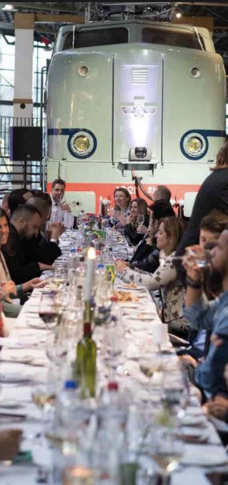

<!DOCTYPE html PUBLIC "-//W3C//DTD XHTML 1.0 Transitional//EN" "http://www.w3.org/TR/xhtml1/DTD/xhtml1-transitional.dtd">

<html xmlns="http://www.w3.org/1999/xhtml" xml:lang="en" lang="en">

<head>


  <meta http-equiv="Content-Type" content="text/html; charset=utf-8" />

  <title>ICDE 2024 Social Events</title>


  <link rel="stylesheet" href="icde2024.css" />
   
</head>
</html>
<html xmlns="http://www.w3.org/1999/xhtml" xml:lang="en" lang="en">
<body style="background-color: rgb(255, 255, 255); font-family: arial; font-size: 10pt;">


<table cellspacing=0 cellpadding=0 border=0 width="100%" >
<tr><td align="center">
<table style="width: 1040px; height: 800px;" cellpadding="0" cellspacing="0" border=0>


  <tbody>


    <tr style="height: 151px;">


      <td width="100%" align="left">


<table width="1040" height="120" border="0" align="left" cellpadding="0" cellspacing="0" bordercolor="#CCCCCC">

<tr>
<td  align="left" valign="middle" colspan=2> </td>		
</tr>
<tr>
<td></td><td valign="bottom"><hr /></td>
</tr>
</table>


<!-- end header !--></td>
    </tr>


    <tr	valign="top">


      <td>

      <table style="width: 100%; height: 100%;" cellpadding="1" cellspacing="0" border=0>


        <tbody>


          <tr valign="top">
			<!-- start side panel !-->
<td style="width: 23%;">
<div id="sidebar">
<table style="width:100%"><tr><th class="tblCellHead" style="background-color:#73231A;color:white;">General Information</th></tr></table>
<ul>
<li><a href="index.html">Conference Overview</a></li>
<li><a href="conference_officers.html">Conference Officers</a></li>
<li><a href="di.html">Diversity and Inclusion</a></li>
</ul>

<table style="width:100%"><tr><th class="tblCellHead" style="background-color:#73231A;color:white;">Program</th></tr></table>
<ul>
<li><a href="program.html">Detailed Program </a></li>
<li><a href="keynotes.html">Keynotes </a></li>
<li><a href="papers.html">Research Papers</a></li>
<li><a href="invited.html">Industry Invited Talks</a></li>
<li><a href="industry.html">Industry &amp; Application  Papers</a></li>
<li><a href="tutorials.html">Tutorials </a></li>
<li><a href="demos.html">Demonstrations</a></li>
<li><a href="DEFT.html">Future Technologies Papers</a></li>
<li><a href="phd.html">PhD Symposium Papers </a></li>
<li><a href="lightning.html">Lightning Talks</a></li>
<li><a href="TKDE.html">TKDE Posters</a></li>
<li><a href="sponsorTalks.html">Sponsor Talks</a></li>
<li><a href="panel.html">Panels</a></li>
<li><a href="workshops.html">Workshops </a></li>
<li><a href="awards.html">Awards </a></li>
<li><a href="social.html">Social Events </a></li>
</ul>

<table style="width:100%"><tr><th class="tblCellHead" style="background-color:#73231A;color:white;">Participant Information</th></tr></table>
<ul>
<li><a href="registration.html">Registration</a></li>
<li><a href="venue.html">Venue  &amp; Accommodation</a></li>
<li><a href="travel.html">Travel Information</a></li>
<li><a href="studentAwards.html">Student Travel Awards</a></li>
</ul>

<table style="width:100%"><tr><th class="tblCellHead" style="background-color:#73231A;color:white;">Calls for Contributions</th></tr></table>
<ul>
<li><a href="CFP_research.html">Research</a></li>
<li><a href="CFP_industry.html">Industry and Application</a></li>
<li><a href="CFP_demos.html">Demonstrations</a></li> 
<li><a href="CFP_tutorials.html">Tutorials</a></li> 
<li><a href="CFP_DEFT.html">Future Technologies Special Session</a></li>
<li><a href="empty.html">Panels</a></li> 
<li><a href="CFP_workshops.html">Workshops</a></li>
<li><a href="CFP_phd.html">PhD Symposium</a></li>
<li><a href="CFP_lightning.html">Lightning Talks</a></li>
<li><a href="CFP_TKDE.html">TKDE Posters</a></li>
</ul>
	
<table style="width:100%"><tr><th class="tblCellHead" style="background-color:#73231A;color:white;">Dates and Guidelines</th></tr></table>
<ul>
<li><a href="important_dates.html">Important Dates</a></li>
<li><a href="empty.html">Formatting Guidelines</a></li>
</ul>

<table style="width:100%"><tr><th class="tblCellHead" style="background-color:#73231A;color:white;">Sponsorship Opportunities</th></tr></table>
<ul>
<li><a href="conference_opportunities.html">Contribution Packages</a></li>
<li><a href="conference_opportunities.html"></a></li>
</ul>
</div>
<!-- end side panel !-->       </td>


                    <td style="border-left: 1px solid #CCCCCC; width: 100%; height: 100%" valign="top"><table border="0" width="100%" height="100%" id="table1">
				        <tr>
				          <td align="left" valign="top">
				             <div id="main"> 

<p align="center"><table border="0" width=100%>
</td></tr>
</table>
</div></p>
		</div>
	</div>
				          
				          
	<div id="main"> 
<p>
	<table cellspacing="0" cellpadding="0" border=0 width=100%>
	<tr><td>
	<!-- HERE STARTS THE CONTENT. -->
	

	<div class="title">Social Events</div>
	<p/>

	<table id="Program" style="width:90%">
		<tr>
			<th class="tblCellHead" style="background-color:#AB4951;color:white;">Monday May 13th, 2024 @ 17:00</th> 
		</tr>
	</table>
	<table id="socialWelcome" style="width:90%">
		<tr>
			<th class="tblCellHead" style="background-color:#e36414;color:white;">Welcome reception [ In Speys ]</th> 
		</tr>
		<tr>
			<td class="tblCellCnt">
				The ICDE organizing committee is inviting you for a welcome drink at the Speys restaurant. Please join us for some relaxing time, meet colleagues and friends, and catch up on your their recent works (and not only).  
			</td>
		</tr>
	</table>

	<p/>
	<table id="Program" style="width:90%">
		<tr>
			<th class="tblCellHead" style="background-color:#AB4951;color:white;">Tuesday May 14th, 2024 @ 18:00</th> 
		</tr>
	</table>
	<table id="socialTCDE" style="width:90%">
		<tr>
			<th class="tblCellHead" style="background-color:#e36414;color:white;">TCDE reception [ In Speys ]</th> 
		</tr>
		<tr>
			<td class="tblCellCnt">
				The Technical Committee on Data Engineering (TCDE), together with the organizing committee of ICDE 2024, is cordialy inviting you for drinks and some snaks and plenty of socializing in the Speys area, right after the last session.
				At the very end of the Speys area, you will find the TKDE posters. Do not miss the opportunity to talk to their authors who will be waiting for you.
			</td>
		</tr>
	</table>

	<p/>
	<table id="banquet" style="width:90%">
	<tr>
		<th class="tblCellHead" style="background-color:#AB4951;color:white;">Wednesday May 15th, 2024 @ 19:00</th> 
	</tr>
	<tr>
		<td>
		This year, the organization of the conference is offering two different types of banquet dinner. 
		A dinner at the museum and a party-boat sail in the canals.  
		</td>
	</tr>
	</table>
	<p/>
	<table id="socialMuseum" style="width:90%">
			<tr>
				<th class="tblCellHead" style="background-color:#e36414;color:white;">Dinner at the museum ....  [ In the Railway Museum (Spoorwegmuseum) ]</th> 
			</tr>
			<tr>
				<td class="tblCellCnt">
					The ICDE24 Organization committee would like to ask the honor of your presence in a sit-down dinner at the <a href="https://www.spoorwegmuseum.nl/en/">Railway Museum (Spoorwegmuseum)</a> in Utrecht. 
					Come to have a dinner in a unique environment among the  trains, while talking to fellow researchers, catching up with old connections, or making news. 	
					The museum is located at Maliebaanstation 16, 3581 XW Utrecht. Participants can arrive to the museum on foot from from Kinepolis.
					It takes only 30 min and the route is through the city, allowing you to admire its style and the lovely canal that goes though it. 
					
					<br/>
					<p/>
					<table border="0">
						<tr>
							<td>
								<table border="0">
									<tr>
										<td></td>
									</tr>
									<tr>
										<td></td>
									</tr>
								</table>
							</td>
							<td>
								
							</td>
						</tr>
						<tr>
							<td colspan="2">
								
							</td>
						
						</tr>
					</table>
					<br/>
				</td>
			</tr>
			</table>

			<p/>
			<table id="socialBoat" style="width:90%">
				<tr>
					<th class="tblCellHead" style="background-color:#e36414;color:white;">Dancing in the Canals ... [ On Boat 8 ]</th> 
				</tr>
				<tr>
					<td class="tblCellCnt">
						The organizing committee would like to invite you for a unique experience of a walking dinner on the party-boat <a href="https://www.boot10.nl/site/partyboot-8">BOAT 8</a>. 
						Enjoy your dinner in the boat lounges or the deck outside under the music of the DJ ... and maybe dance as the boat sails through the canals. 
						Transportation to and from the docks is done by public transportation, leaving from the venue right after the end of the last presentation session of the day. 
						The dock is at Rooseveltlaan 1100, 3526 BT Utrecht.
						<p/>
						<table>
							<tr>
								<td><br/></td>
								<td></td>
							</tr>
						</table>
					</td>
				</tr>
				</table>
		
		
		
		
		
	<!-- HERE ENDS THE CONTENT.-->
						
</td></td>       	  
</tr></table>


	             
	                </div>
	                
			               </td>
				        </tr>
				        <tr><td>
				        </td></tr>
			            </table>
			            

			            
				      <!--end of mainbody-->
            
			<p> <br />
            </p>            <hr> <div class="discl"><b>Disclaimer:</b> The Organizing Committee of a ICDE conference is not liable for any loss or damage arising from the activities of this particular conference as exercised by its agents: conference organizers, carriers, proceedings, publications and program committee.</div>
				       </td>
			<td style="width: 1%"></td>
          </tr>
        </tbody>
      </table>      </td>
    </tr>


<!--footer-->
  
       <tr>
	<td class="linkfooterbar" width="100%" align="center" bgcolor="#7d1a14">

<div id="textbar">&copy; ICDE 2024</div>
</tr>

<tr> 
    <td align="center">
      <table cellspacing=0 cellpadding=1 border=0 width=100% bordercolor="#077431">
	  <tr>
	  <td align="center" class="linkfooter">
        </p>        </td>
		</tr>
	  </table>    </td>
</tr>
  
  </tbody>
</table>
</td></tr></table>

</body>

</html>


	
